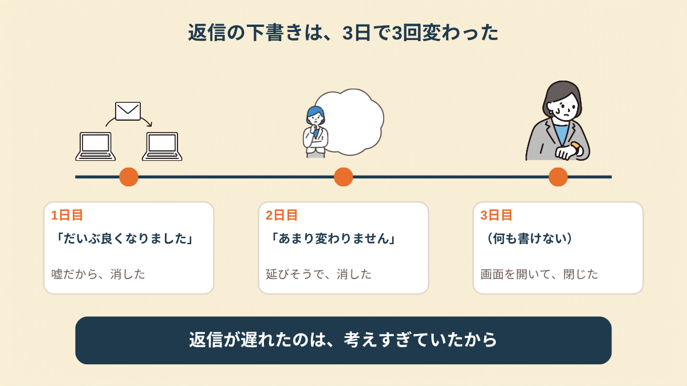
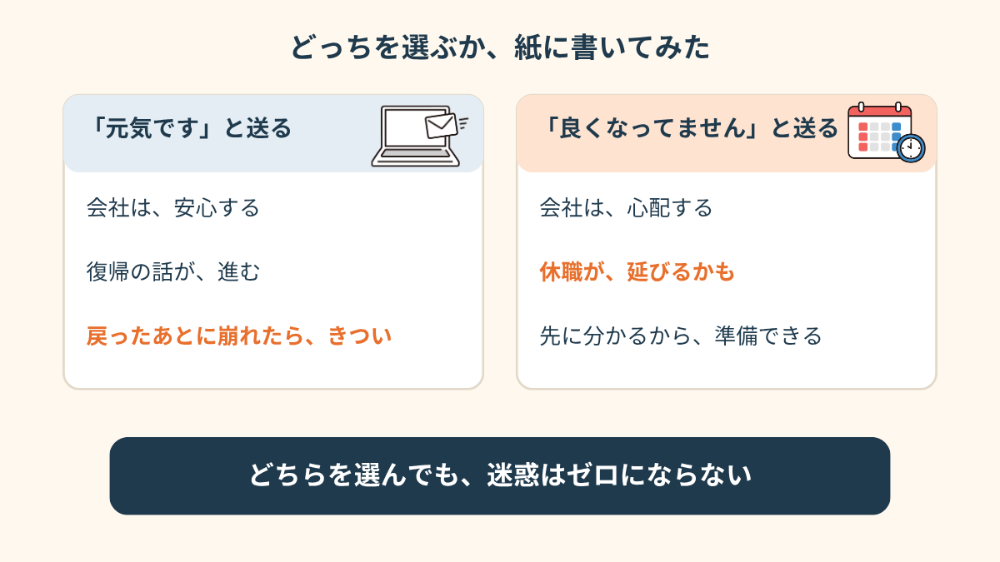
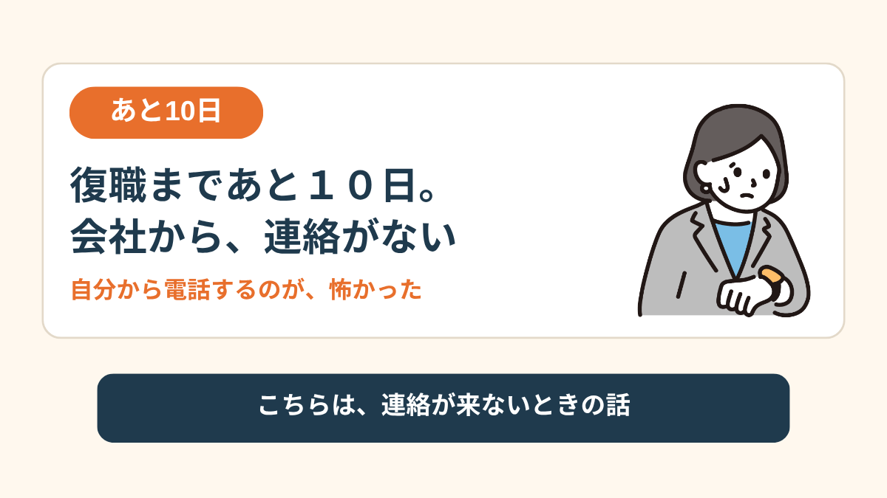
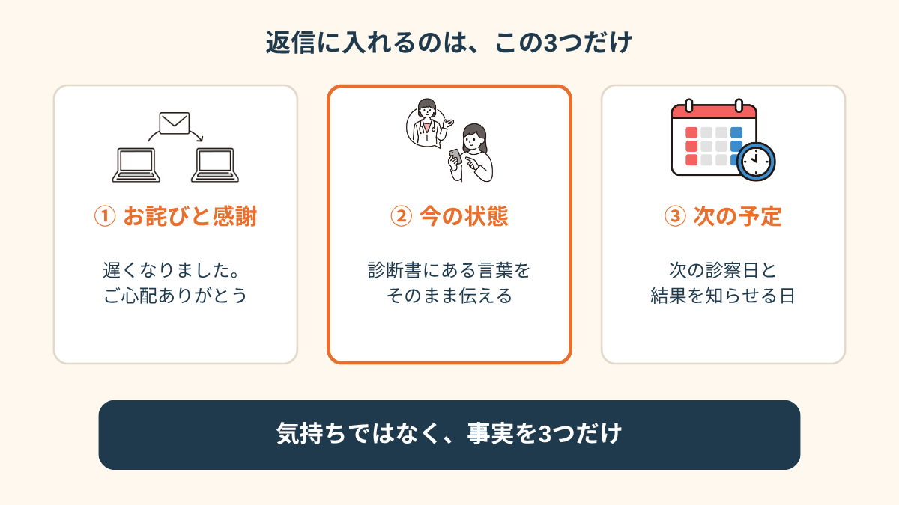
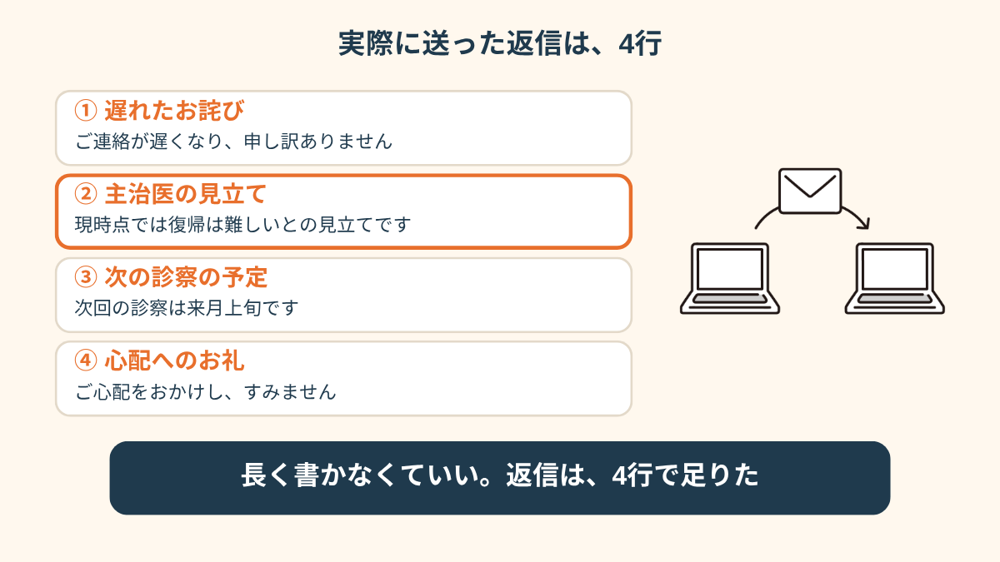
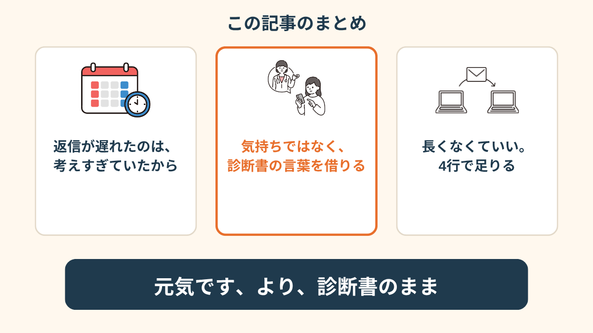

上司からの、たった一行のメールでした。
本当は、前より悪くなってる。なのに指は、「元気です」と打ちかけてました。
心配してくれるメールほど、返しにくかった
休職して、もうすぐ3ヶ月。
会社からの連絡は、いつも事務的な書類ばかりだったんです。
その日だけ、上司個人から。
「体調はいかがですか。無理のない範囲で、状況を教えてもらえると助かります」
優しい文面なんですよ。だから余計にきつかった。
朝は起きられない日が増えて、食欲も落ちてて、正直、休み始めの頃よりしんどい。
でも長く休んでる自覚があるから、「悪くなってます」と書くのが、悪いことみたいに思えたんです。
下書きが、3日で3回変わった
1日目は、「だいぶ良くなりました」と書きました。
2日目、読み返して消しました。嘘だから。
2日目の夜は、「正直、あまり変わりません」。
これも消した。休職が延びると言われそうで。
3日目の朝は、何も書かないまま、画面だけ開いて閉じてました。
結局、3日、返せなかった。

「元気ですって送った方が、会社は安心するんだろうなって。でも送った後に悪くなったら、それこそ迷惑じゃないですか。どっちに転んでも詰んでる気がして、スマホを伏せました」
「迷惑をかける」の中身を、ちゃんと見てみた
3日目の夜、紙に書き出しました。
「元気です」と送った場合と、「良くなってません」と送った場合。
前者は、会社は安心する。でも復帰の話が進んで、戻ったあとに崩れたら、自分も周りもきつい。
後者は、会社は心配する。休職が延びるかもしれない。でも、体調が悪いまま戻るよりは、先に分かってる方が会社も準備できる。
「迷惑」って、どっちを選んでもゼロにはならないんですよね。
ただ、嘘をつくと、あとで自分が一番しんどくなる。


逆に、連絡が来なくて怖かった話を読む →診断書の言葉を借りたら、書けた
自分の言葉だと、どう書いても嘘っぽくなるか、重くなるかでした。
そこで、次の診察で主治医に聞いてみたんです。
「上司にどう伝えたらいいか、分からなくて」って。
返ってきたのは、「診断書に書いてあることを、そのまま伝えればいいですよ」。
自分の気持ちや弱音ではなく、医師の見立てとして伝える。
それだけで、肩の力がだいぶ抜けました。


実際に送った、4行
送ったのは、こんな内容です。
「ご連絡が遅くなり、申し訳ありません。
主治医からは、現時点では復帰は難しく、もう少し休養が必要との見立てをいただいています。
次回の診察は来月上旬で、その結果を改めてお知らせします。
ご心配をおかけし、すみません」
送信して、10分くらい手が震えてました。
返事は翌日。「分かりました。無理をせず、ゆっくり休んでください」。
拍子抜けするくらい、それだけでした。


この記事に、聞いてみたいことはありますか？
「自分の場合はどうなんだろう」と思ったことを、気軽に書いてみてください。いただいた質問は個別にお返事したうえで、匿名で記事にすることがあります。